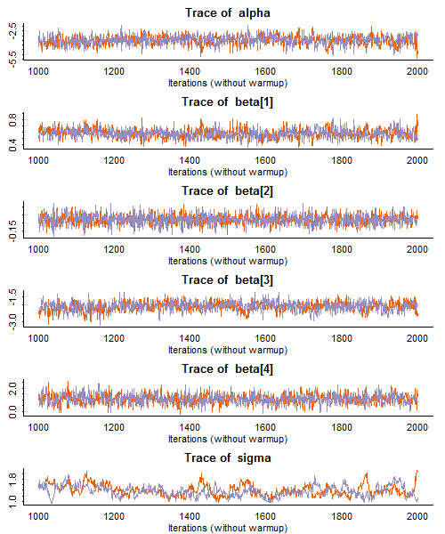

<h2 class="first" id="stan">Random-Effects Logits using Stan</h2>
<p>We now illustrate the use of the latest Hamiltonian Monte Carlo (HMC)
algorithm, the No-U Turn Sampler (NUTS) of Hoffman and Gelman (2011), as
implemented in the package Stan, see <a
href="https://mc-stan.org/">mc-stan.org</a> for detailed information.
Stan is written in C++ and can be run from the command line, R, Stata or
Python. Here we illustrate running it on the hospital data using the
R-interface <code>rstan</code>.</p>
<p>A quick reminder of the data and model. We have information on
hospital delivery (yes or no) for 1060 pregnancies of 501 women.
Predictors of interest are the log of income, distance to the nearest
hospital, and education, represented by indicators of high school
dropouts and college graduates. This is a simple random-intercept logit
model that can easily be fitted by maximum likelihood using Stata’s
<code>xtlogit</code> or <code>melogit</code>, as well as R’s
<code>glmer()</code> in the <code>lme4</code> package. We find
comparison with Bayesian estimates of interest.</p>
<p>Stan uses a language similar to Bugs, but is quite different under
the hood. The model specification is translated into the C++ language,
and the program is then compiled and run on your data. Sampling is very
fast once the model has been compiled. The package is very well
documented and installation proceeded uneventfully on my home and work
machines. Once you have the necessary tools installed the process is
fairly transparent.</p>
<p>Here’s the Stan program for the hospital data, a long string assigned
to an R object named <code>hosp_code</code></p>
<pre><code>hosp_code &lt;- &#39;
data {
    int N; // number of obs (pregnancies)
    int M; // number of groups (women)
    int K; // number of predictors
    
    int y[N]; // outcome
    row_vector[K] x[N]; // predictors
    int g[N];    // map obs to groups (pregnancies to women)
}
parameters {
    real alpha;
    real a[M]; 
    vector[K] beta;
    real&lt;lower=0,upper=10&gt; sigma;  
}
model {
  alpha ~ normal(0,100);
  a ~ normal(0,sigma);
  beta ~ normal(0,100);
  for(n in 1:N) {
    y[n] ~ bernoulli(inv_logit( alpha + a[g[n]] + x[n]*beta));
  }
}
&#39;</code></pre>
<p>We start by specifying the data, which consist of an n-vector of
outcomes (y), an n by k matrix of predictors (x), and an n-vector
mapping pregnancies to women (g). The parameters are the constant
(alpha), the woman-specific random effects (a), the coefficients of the
k predictors (beta) and the standard deviation of the random effects
(sigma) which is in (0,10).</p>
<p>The model provides non-informative normal priors for the fixed
effects alpha and beta. Stan specifies normal distributions using the
standard deviations, not the variance, nor the precision used by BUGS.
The hyperprior for sigma is uniform(0,10) as is determined by the limits
given. Finally the outcomes are Bernoulli with probability given by the
inverse logit of the linear predictor.</p>
<p>To run the model in R we use the <code>rstan</code> package. First we
create an object with the data using the same names as in the Stan code.
The data themselves are in an R object called <code>hosp</code>.</p>
<pre><code>&gt; hosp_data &lt;- list(N=nrow(hosp),M=501,K=4,y=hosp[,1],x=hosp[,2:5],g=hosp[,6])</code></pre>
<p>We are now ready to call <code>stan()</code> to run the model. Here I
specify 2 chains of 2000 observations each.</p>
<pre><code>hfit &lt;- stan(model_code=hosp_code, model_name=&quot;hospitals&quot;, data=hosp_data, iter=2000, chains=2)

TRANSLATING MODEL &#39;hospitals&#39; FROM Stan CODE TO C++ CODE NOW.
COMPILING THE C++ CODE FOR MODEL &#39;hospitals&#39; NOW.
...
SAMPLING FOR MODEL &#39;hospitals&#39; NOW (CHAIN 1).
Iteration: 2000 / 2000 [100%]  (Sampling)
Elapsed Time: 58.065 seconds (Warm-up)
              24.373 seconds (Sampling)
              82.438 seconds (Total)

SAMPLING FOR MODEL &#39;hospitals&#39; NOW (CHAIN 2).
Iteration: 2000 / 2000 [100%]  (Sampling)
Elapsed Time: 58.074 seconds (Warm-up)
              23.186 seconds (Sampling)
              81.26 seconds (Total)</code></pre>
<p>Stan prints some useful information, including folder names I
supressed, and provides feedback every 200 samples. As you can see, it
took less than three minutes to run the two chains.</p>
<p>The code below produces a summary of results. The default
<code>print()</code> method in <code>rstan</code> prints all the
woman-specific random effects, so I used the <code>pars</code> parameter
to select the coefficients of primary interest. The default also prints
the 2.5, 25, 50, 75, and 97.5 percentiles but I trimmed the list to
obtain the median and a 95% credible interval. Finally the default
prints just one decimal place and I prefer a bit more. Results are very
similar to the Gibbs sampling estimates in <a
href="https://data.princeton.edu/pop510/hospBUGS">hospBUGS</a></p>
<pre><code>&gt; print(hfit, pars=c(&quot;alpha&quot;,&quot;beta[1]&quot;,&quot;beta[2]&quot;,&quot;beta[3]&quot;,&quot;beta[4]&quot;,&quot;sigma&quot;), 
+       probs = c(0.025, 0.50, 0.975), digits_summary=3)
Inference for Stan model: hospitals.
2 chains, each with iter=2000; warmup=1000; thin=1; 
post-warmup draws per chain=1000, total post-warmup draws=2000.

          mean se_mean    sd   2.5%    50%  97.5% n_eff  Rhat
alpha   -3.488   0.022 0.503 -4.495 -3.473 -2.575   508 1.001
beta[1]  0.581   0.003 0.074  0.446  0.579  0.736   544 1.000
beta[2] -0.077   0.001 0.033 -0.141 -0.077 -0.011  2000 0.999
beta[3] -2.088   0.016 0.279 -2.668 -2.078 -1.576   291 1.001
beta[4]  1.094   0.013 0.424  0.267  1.080  1.942  1139 1.000
sigma    1.385   0.023 0.199  1.039  1.364  1.813    76 1.012

Samples were drawn using NUTS(diag_e) at Mon Mar 24 21:12:06 2014.
For each parameter, n_eff is a crude measure of effective sample size,
and Rhat is the potential scale reduction factor on split chains (at 
convergence, Rhat=1).</code></pre>
<p>Finally, here is the traditional trace plot for the same parameters.
I stack them in one column with six rows, and exclude the warmup. Note
that sigma exhibits slow mixing, also evident in the low effective
sample size of 76.</p>
<pre><code>&gt; traceplot(hfit,c(&quot;alpha&quot;,&quot;beta[1]&quot;,&quot;beta[2]&quot;,&quot;beta[3]&quot;,&quot;beta[4]&quot;,&quot;sigma&quot;),
    ncol=1,nrow=6,inc_warmup=F)</code></pre>
<p></p>
<p>I realize the output would be better labelled if I had called the
coefficients bcons, bloginc, bdistance, bdropout and bcollege, as I did
with winBUGS, rather than alpha and beta, but I thought there was an
advantage to keeping the code generic. In particular, the exact same
Stan model (and compiled program) can be run on any two-level
random-intercept logit model by changing just the data.</p>
